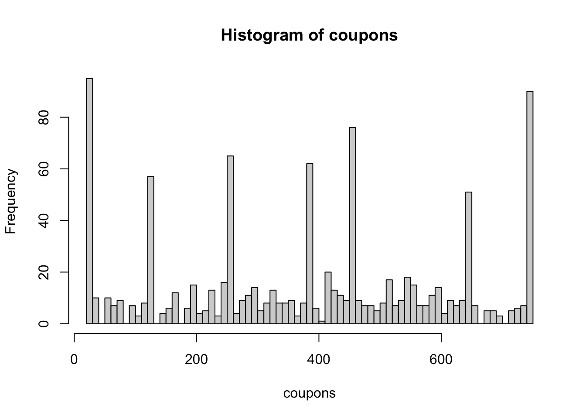

TL;DR Suppose you want to organize a perfect lottery where people genuinely believe in winning and have no chance of winning. In that case, you need to hire a good mathematician. However, the R programmer can easily expose the mechanism with proper data.
Post
Kasa Romana is a popular lottery in Poland organized by the Amino food company. Established in the 90s, the lottery provides an opportunity to win real money by collecting a set of coupons that sum up to full hundreds up to 1000. In this blog post, we will analyze the data from the last Kasa Romana event held in 2016 using the Knapsack Algorithm in R.
BezKanalu, a popular YouTube channel in Poland that tests products during promotions, collected precisely 1002 coupons from the last event, providing a sufficient amount of data for analysis. The main objective is to find patterns in the data and determine if the collected coupons give any chance to win real money.
To achieve the goal, I used the Knapsack Algorithm, a classic optimization problem that involves finding the optimal way to pack a set of items into a limited space while maximizing their total value. In this case, the “items” are the coupons, and the “limited space” is the need to have a set of coupons that sum up to full hundreds up to 1000.
I implemented the Knapsack Algorithm in R programming environment to check if there are any combinations of coupons that enable the lottery participants to win any money. The algorithm works by iterating over all possible subsets of the coupons and selecting the one that satisfies the constraints and maximizes the total value.
The analysis with 1000 coupons revealed that there are is NO combinations of coupons that enable the participants to win real money in the Kasa Romana lottery.
In conclusion, the Knapsack Algorithm is a powerful tool for solving optimization problems like the Kasa Romana lottery. By using R programming environment, I was able to analyze the data and provide valuable insights into the lottery’s patterns and trends.
Analysis
WebR R Console to Play with the Code
Please install any needed dependency with call like webr::install("dplyr").
The available R packages can be get with the rownames(available.packages(repos = "https://repo.r-wasm.org/")) call.
Please note that the adagio package used later in the post is not yet available in the webr console.
Loading webR, please wait...Static Code
Sorted unique values:
sort(unique(coupons)) [1] 26 39 52 65 78 91 104 117 130 143 156 165 169 182 191 195 204 208 217
[20] 221 230 234 243 247 256 260 269 273 282 286 295 299 308 312 321 325 334 338
[39] 347 351 360 364 373 377 386 390 399 403 412 416 425 429 438 442 451 455 464
[58] 468 477 481 490 494 503 507 516 520 529 533 542 546 555 559 568 572 581 585
[77] 594 598 607 611 620 624 633 637 646 650 659 672 685 698 711 724 737 750Sorted table of frequencies:
sort(table(coupons))coupons
334 403 646 204 208 360 507 620 104 234 364 481 633 698 143 247 256 269 373 377
1 1 1 2 2 2 2 2 3 3 3 3 3 3 4 4 4 4 4 4
429 468 490 581 607 217 286 308 386 451 464 494 594 672 685 711 156 165 169 182
4 4 4 4 4 5 5 5 5 5 5 5 5 5 5 5 6 6 6 6
221 282 299 325 399 503 559 637 724 65 91 191 230 321 338 351 416 477 516 529
6 6 6 6 6 6 6 6 6 7 7 7 7 7 7 7 7 7 7 7
568 572 585 611 624 659 737 117 195 295 312 347 78 273 425 442 533 542 546 555
7 7 7 7 7 7 7 8 8 8 8 8 9 9 9 9 9 9 9 9
598 39 52 520 438 243 412 650 130 390 260 455 750 26
9 10 10 10 11 12 13 50 57 57 61 71 90 95 Histrogram might be helpful to find certain patterns:
hist(coupons, breaks = 100)
Numbers seems to be generated from 2 specific patterns:
- multiplication of 13 starting from 26
- multiplication of 13 plus 165
All of the coupons comes from this 2 sequences.
rep13 <- 13 * 1:52
rep2_13 <- 165 + (13 * 0:45)
all(coupons %in% c(rep13, rep2_13))[1] TRUESingle knapsack problem:
Knapsack is an optimization method, linear programming for integers.
Each of 1000 coupons is replicated 100 times before the procedure. This replication step is not needed to get this certain results although it will be even more convincing. Remainder, I was looking for set of coupons which sum to full hundreds (100, 200, …) up to 1000.
# adagio can not be downloaded in the WebR R console
library(adagio)
cupon_we_have = rep(coupons, 100)
amount_we_want = seq(100, 1000, 100)
for(i in amount_we_want){
solution <- try(
knapsack(
p = cupon_we_have[cupon_we_have<i],
w = cupon_we_have[cupon_we_have<i],
cap = i
)
)
print(sprintf("Best result for %s reward is %s", i, solution$profit))
}[1] "Best result for 100 reward is 91"
[1] "Best result for 200 reward is 195"
[1] "Best result for 300 reward is 299"
[1] "Best result for 400 reward is 399"
[1] "Best result for 500 reward is 499"
[1] "Best result for 600 reward is 599"
[1] "Best result for 700 reward is 699"
[1] "Best result for 800 reward is 798"
[1] "Best result for 900 reward is 898"
[1] "Best result for 1000 reward is 998"Taking into account only coupons provided there is NO chance to win anything.
This seems to no be surprising when we know from what sequences the coupons come from.